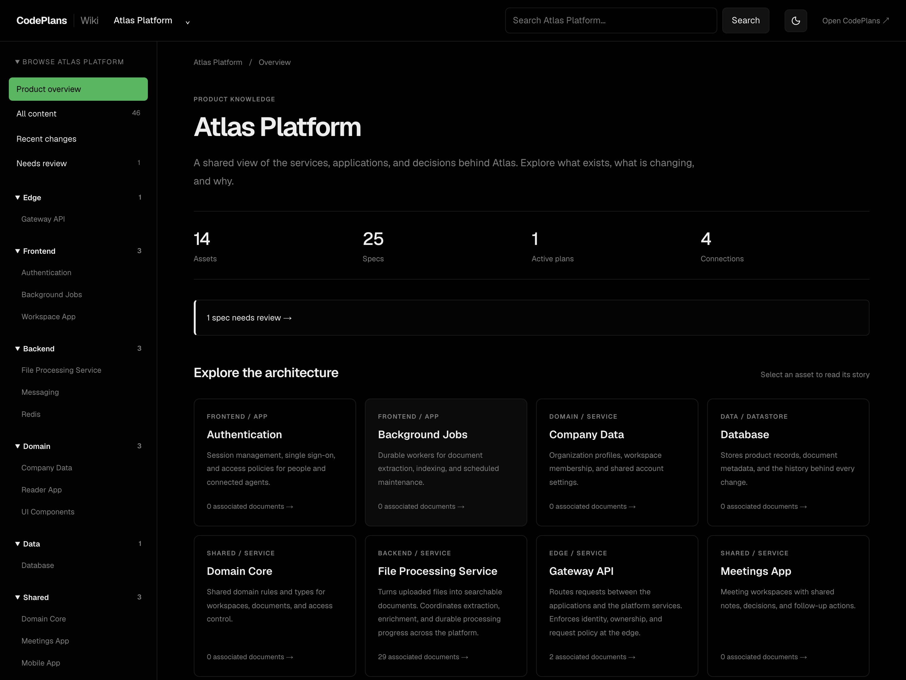
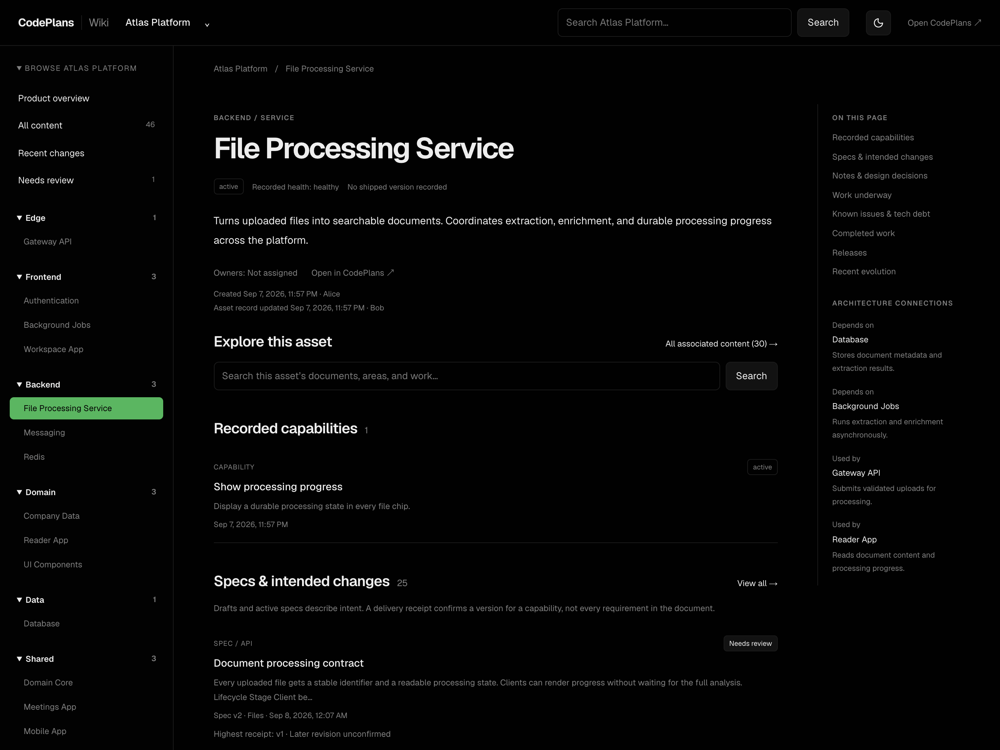
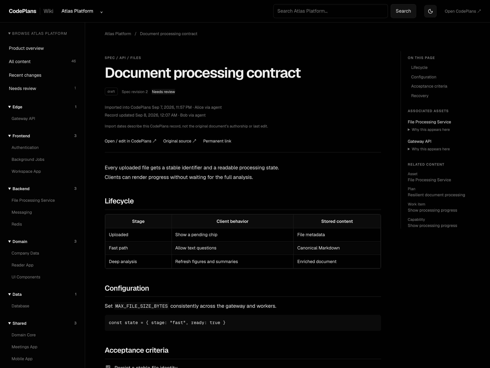
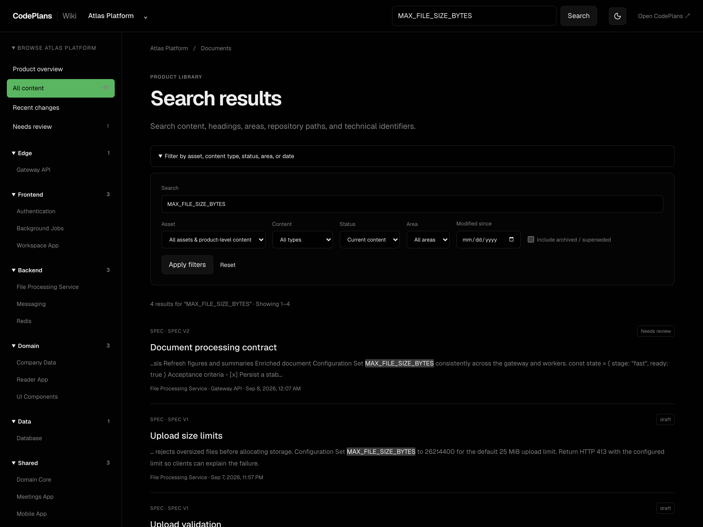

Specs that live next to the work
Author a spec in CodePlans, give it a type and optional area, and link one document to the assets, plans and work items it governs. Plans declare whether they create, revise or reference it.
The Specs page separates current specs from those in review (including fresh imports waiting to be checked) and the archive.
{kind=link}
Every revision kept, every change visible
Each change to the title or text is a new version with its full text retained. Open any earlier version read-only, or diff it against its predecessor. Activating, archiving or reclassifying a spec happens in place from the action bar at the top of the page: no new version, and approvals stay put.
When a capability was delivered against v1 and the spec moves to v2, the asset record shows both, without rewriting the delivery receipt.
{kind=link}
A wiki assembled from the work you already record
Open Wiki from the main navigation in its own tab. Read the architecture, documents, decisions and delivery history around every asset, with creator and editor attribution and import provenance. Missing metadata stays explicitly unknown.
{kind=link}

{kind=link}

{kind=link}

{kind=link}

Wiki screenshots are from a synthetic Atlas demo workspace.
Bring existing Markdown specs across
Apply the normal migrations, then preview the product-scoped legacy URL import. The importer deduplicates source URLs, puts imports in review, and keeps later native edits on reruns.